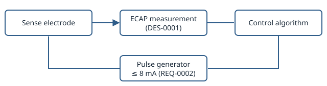
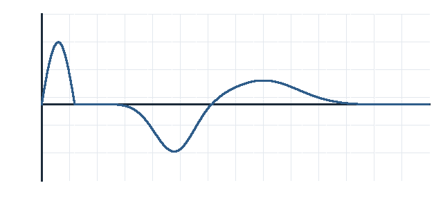

DOC-0001 System Requirements Specification — NeuroPulse Stimulator
System Requirements Specification
This document is authored prose interleaved with live query blocks (provenance-ddf DES-0032) — it stores only the queries below, never a copy of the entities they resolve. Editing REQ-0001 anywhere in the repository updates what this document renders next time it's generated, with nothing to keep in sync by hand.
Scope
This specification covers the closed-loop stimulation control requirements for the NeuroPulse system, decomposed from the user needs in USR-0001 and USR-0002. The control loop they constrain is shown in Figure 1, and the evoked response it regulates on in Figure 2. Closed-loop control on the evoked response follows the approach evaluated clinically in [1].


Requirements
All approved requirements, in author-assigned order:
Amplitude Ceiling — Subsystem Detail
The system-level ceiling is Single-fault amplitude ceiling, allocated to the subsystem level as an independent hardware safeguard. Table 1 lists the limits at each level.
| Level | Limit | Enforced by |
|---|---|---|
| System | 8 mA under any single fault | REQ-0002 |
| Subsystem | Hard current limit in the ASIC | REQ-0003 |
The subsystem requirement in full:
Traceability Note
Full traceability to design elements, risk controls, and verification evidence is generated separately as coverage reports (provenance-ddf REQ-0094) rather than duplicated in this document's own query blocks. Risk controls follow the process of [3, clause 7] and are summarised in DOC-0002.
References
Internal
- DOC-0002: Risk Management Summary — NeuroPulse Stimulator
External
- Long-term safety and efficacy of closed-loop spinal cord stimulation to treat chronic back and leg pain (Evoke): a double-blind, randomised, controlled trial. Mekhail N, Levy RM, Deer TR, et al. (The Lancet Neurology, 2020). doi:10.1016/S1474-4422(19)30414-4. https://doi.org/10.1016/S1474-4422(19)30414-4 Accessed 2026-10-05. (REF-0003)
- Medical electrical equipment — Part 1: General requirements for basic safety and essential performance. IEC/TC 62 (International Electrotechnical Commission, 2020). IEC 60601-1:2005+AMD1:2012+AMD2:2020. (REF-0002)
- Medical devices — Application of risk management to medical devices. ISO/TC 210 (International Organization for Standardization, 2019). ISO 14971:2019. (REF-0001)